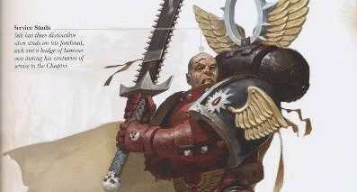

<nz-card nzHoverable style="width:350px;" [nzCover]="coverTemplate" [nzActions]="[actionSave, actionOpen, actionDelete]">
    <nz-card-meta
    nzTitle="Сектор Газа - Грязная кровь"
    nzDescription="Вампир этот жаждал теплой крови моей,
    Он в предвкушеньи даже выпустил клык,
    Но только слегка он у меня отсосал,
    В смысле крови, то в могилу - пи.дык."
  ></nz-card-meta>
</nz-card>
<ng-template #coverTemplate style="height:200px;">
    
  </ng-template>
  <ng-template #actionOpen>
    <span nz-icon nzType="expand-alt" (click)="onOpen()"></span>
  </ng-template>
  <ng-template #actionSave>
    <span nz-icon nzType="save" (click)="onSave()"></span>
  </ng-template>
  <ng-template #actionDelete>
    <span nz-icon nzType="delete" (click)="onTryDelete()"></span>
  </ng-template>
